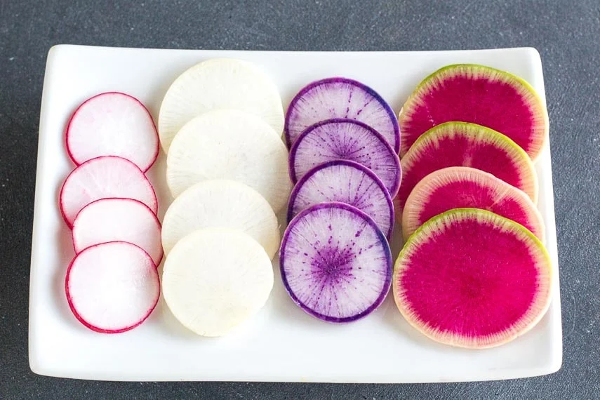

Mad Radish Surprise

Return to the recipe directory
Description
Let your expectations of what a radish is supposed to be, be challenged by this amazing dish. You'll never look at radishes the same again!
Ingredients
- A bundle of filthy radishes
- A finely distilled spirit (at least 40% a.b.v.)
- Goat hair
Steps
- Dig up a bundle of filthsome radishes (best if fresh from the garden)
- Soak in lukewarm water for 72 hours
- After soaking, empty water from pot, pour in 1 L of spirit, and continue to boil until the spirit has totally evaporated
- Slice into thin circular sections, sprinkle with goat hair, and serve immediately